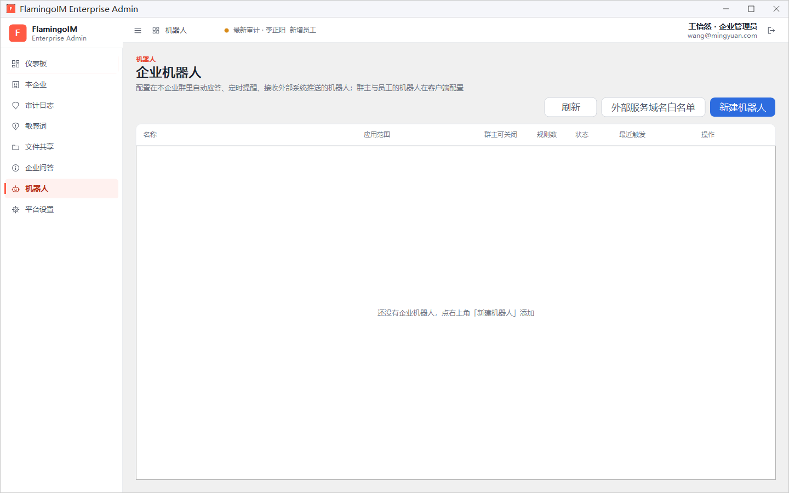
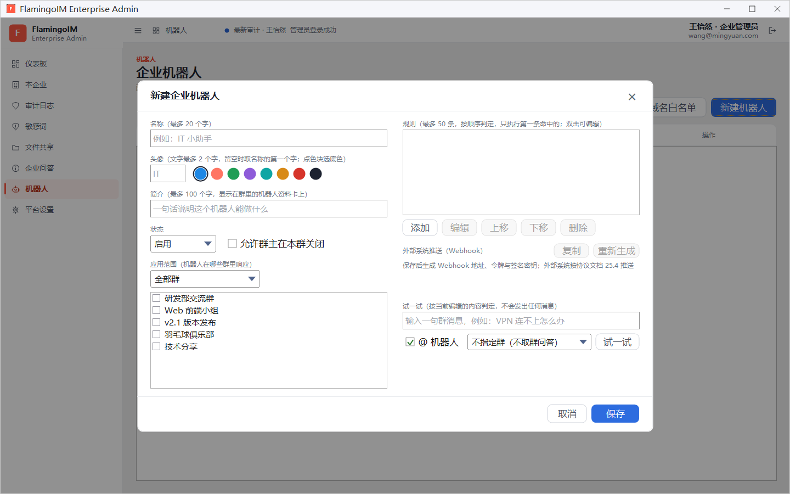
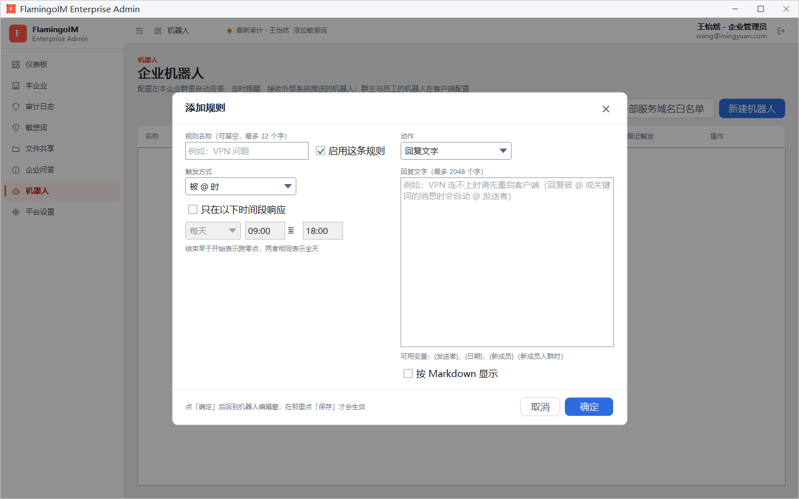
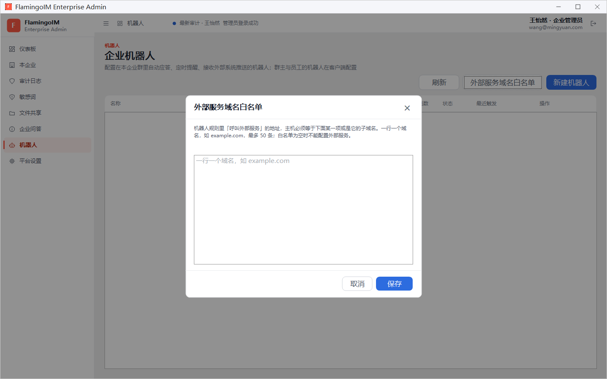

企业机器人
企业机器人由管理员统一配置，可以在本企业的群里自动应答常见问题、定时发送提醒，或者把外部系统推来的通知转发到群里。本章介绍如何新建企业机器人、编写规则、对接外部系统，以及配置外部服务的域名白名单。
- 适用：企业管理员
- 位置：左侧导航「机器人」
- 需要：功能开关「机器人」处于开启状态（见功能开关）
- 上限：每个企业最多 50 个企业机器人，每个机器人最多 50 条规则
三种机器人
| 机器人 | 由谁配置 | 在哪里配置 |
|---|---|---|
| 企业机器人 | 企业管理员 | 管理控制台的「机器人」页面（本章） |
| 群机器人 | 群主 | 客户端群管理窗口的「群机器人」页，见「机器人」 |
| 个人机器人 | 员工本人 | 客户端的「我的机器人」，在自己离开或忙碌时代为回复单聊，见「机器人」 |
机器人列表
点左侧导航的 机器人，进入「企业机器人」页面：

- 右上角三个按钮：刷新、外部服务域名白名单（见本章最后一节）和 新建机器人。
- 列表各列依次是 名称、应用范围（全部群，或「N 个群：群名…」）、群主可关闭（允许或不允许）、规则数、状态（启用或停用）、最近触发（从未触发过时显示「还没有触发过」）和 操作。
- 每行的操作有 编辑、停用 或 启用、删除。删除后机器人不再响应任何消息，群里的历史消息仍显示它的名字。
新建企业机器人
点 新建机器人，打开「新建企业机器人」对话框。左半部分填写机器人的基本信息，右半部分配置规则、外部系统推送和试一试：

- 填写 名称，最多 20 个字，例如「IT 小助手」。
- 设置 头像：左侧框里填头像文字（最多 2 个字，留空时取名称的第一个字），再点一个色块选择底色。
- 填写 简介，最多 100 个字，显示在群里的机器人资料卡上。
- 选择 状态（启用或停用），并决定是否勾选 允许群主在本群关闭。勾选后，群主可以在自己的群里关掉这个机器人。
- 选择 应用范围，即机器人在哪些群里响应：全部群，或 所选的群 并在下方勾选群。
- 在右侧添加规则（见下一节）。
- 点 保存。
编写规则
规则决定机器人在什么情况下做什么。右侧的规则列表最多 50 条，按顺序判定，只执行第一条命中的，所以越具体的规则越要放在前面。列表下方的 添加、编辑、上移、下移、删除 用于管理规则，双击某条规则也可以编辑。
点 添加 打开「添加规则」对话框：

- 按需填写 规则名称（可留空，最多 32 个字），保持勾选 启用这条规则。
- 选择 触发方式，各种方式的区别见下表。
- 需要限制时段时，勾选 只在以下时间段响应，选择「每天」「工作日」或「周末」，再填开始和结束时刻。结束早于开始表示跨零点，两者相同表示全天。
- 选择 动作，并填写对应的内容（见下文）。
- 点 确定。
点「确定」后还要保存机器人规则对话框底部写明：点「确定」后回到机器人编辑窗，在那里点「保存」才会生效。只点了规则的「确定」就关掉机器人编辑窗，规则不会保存。
触发方式
| 触发方式 | 什么时候触发 | 可选的动作 |
|---|---|---|
| 被 @ 时 | 群成员在群里 @ 这个机器人 | 回复文字、用问答作答、呼叫外部服务 |
| 关键词 | 群消息命中关键词。关键词用逗号分隔，最多 20 个，每个最多 32 个字；匹配方式可选「包含」「完全相同」「以……开头」，比较前去掉首尾空白、不分大小写与全半角。可以勾选 必须同时 @ 机器人 | 回复文字、用问答作答、呼叫外部服务 |
| 新成员入群 | 有新成员加入群 | 回复文字 |
| 定时 | 按「每天」「工作日」「每周」「每月」的某个时刻发送（按服务器所在时区），可以勾选发往的群，都不勾表示应用范围内的全部群 | 回复文字 |
| 外部系统推送 | 外部系统向机器人的 Webhook 地址推送消息，机器人把推来的内容原样发到群里 | 没有动作 |
「只在以下时间段响应」适用于被 @ 时、关键词和新成员入群三种触发方式。
动作
- 回复文字：在 回复文字 中填写内容，最多 2048 个字。可以使用变量
{发送者}、{日期}，新成员入群时还可以用{新成员}。回复被 @ 或关键词命中的消息时，机器人会自动 @ 发送者。勾选 按 Markdown 显示 后，回复按 Markdown 格式显示。 - 用问答作答：机器人在本群问答和企业问答里查找答案回复。可以填写兜底文字，问答里找不到答案时回复，也可以留空。
- 呼叫外部服务：机器人把消息发给填写的外部服务地址，并把对方的回复发到群里。地址须是 http 或 https，主机须在外部服务域名白名单内。可以填写兜底文字，外部服务连不上、超时或出错时回复。
外部系统推送（Webhook）
要让外部系统（例如工单系统、监控告警）把通知推到群里，先给机器人添加一条触发方式为「外部系统推送」的规则，再把 Webhook 信息交给外部系统的开发人员：
- 保存机器人。保存后，对话框右侧的 外部系统推送（Webhook） 区域会显示 地址、令牌 和 签名密钥。
- 点 复制，三项内容会一起复制到剪贴板。
- 把它们交给外部系统的开发人员，对方按协议文档（仓库中
docs/协议设计-v2.md第 25.4 节）推送。
令牌或签名密钥可能泄露时，点 重新生成，确认后旧的令牌与签名密钥立即失效，外部系统须改用新的令牌才能继续推送。
推送的限制每个机器人每分钟最多接收 20 条推送，推来的内容同样要经过企业的敏感词检查。机器人应用到多个群时，外部系统推送时须指定群。
试一试
保存之前，可以先在对话框右下角的 试一试 区域检验规则是否符合预期。试一试按当前编辑的内容判定，不会发出任何消息：
- 在输入框中输入一句模拟的群消息，例如「VPN 连不上怎么办」。
- 要模拟 @ 机器人时，勾选 @ 机器人。
- 在下拉框中选择一个群，规则使用「用问答作答」时会取该群的问答；选「不指定群（不取群问答）」时不取群问答。
- 点 试一试，结果会说明命中了哪条规则、会回复什么；没有规则命中时提示「没有规则命中，机器人不会回复」。对「呼叫外部服务」的规则，试一试只显示会呼叫的地址，不会真正调用。
外部服务域名白名单
为了防止群消息被发到不受信任的地方，机器人规则里「呼叫外部服务」的地址必须在白名单内。点页面右上角的 外部服务域名白名单：

- 在文本框中一行写一个域名，例如
example.com，最多 50 条。域名只能包含字母、数字、点号与连字符。 - 点 保存。
呼叫外部服务的地址，主机必须等于名单里的某一项，或是它的子域名。例如名单里有 example.com 时，api.example.com 也被允许。
白名单为空时不能配置外部服务白名单为空时，企业机器人与群机器人都不能配置「呼叫外部服务」的规则。群主给群机器人配置外部服务，还需要打开功能开关「允许群主给群机器人配置外部服务」，见「功能开关」。